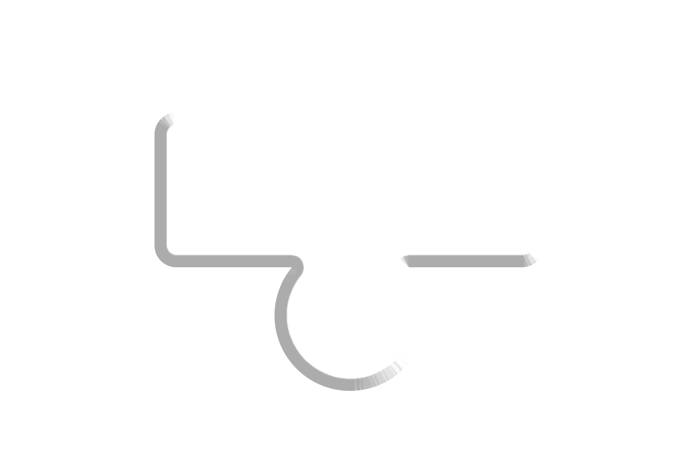

The website’s goal is to convey a thread of thoughts about escapism through our online presence and digital personas from everyday life into a virtual, often only wanted/imaginary world. How do we create a representation of ourselves in a digital space, how this contemporary form of self-expression affects us as a human being? How much can we separate our physical world presence from our curated online persona? The website contains a non-linear list of references and ideas stemming from Micha Klein’s book (1998) with personal thoughts and interpretations.
click the CD to explore!
